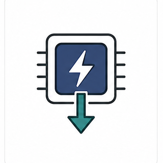
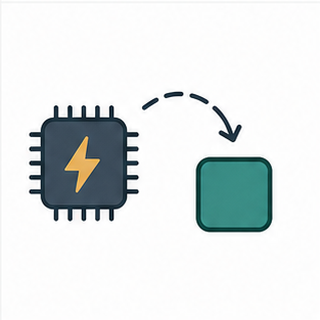
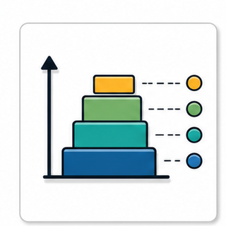
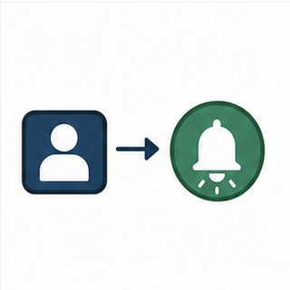

Keys: Left/Right or PageUp/PageDown to move, Home/End to jump, S to toggle slideshow, F for fullscreen, Z for fit/fill, Esc to exit.
Interrupt Management and Deferred Processing
Interrupts should capture events quickly, then move substantial processing into task context using the correct interrupt-safe API.
Course: FreeRTOS Lecture
Embedded Systems Laboratory, Pusan National University
Instructor: Prof. Yunju Baek
Learning path
- Interrupt context versus task context
- FromISR API families and immediate yield decisions
- Cortex-M interrupt priority boundaries
- Deferred work choices: semaphore, queue, notification, daemon task
- Source reading and diagnostic evidence
First target: treat an ISR as a boundary crossing, not as another task.
01
Course Position
Module 07 introduced ISR queues. Module 08 widens that idea into a general hardware-to-kernel boundary.

Interrupt eventHardware can interrupt task execution at a point the task did not choose.

Deferred workThe ISR captures the event, then wakes a task for heavier processing.

Priority boundaryNot every hardware interrupt priority is allowed to call FreeRTOS APIs.
The module is about boundary discipline: context, priority, and handoff.
02
Why Interrupts Need Their Own Rules
They preempt tasks
- An ISR runs because hardware requested attention.
- The interrupted task did not call into the kernel voluntarily.
- Long ISR work can delay task scheduling and other interrupts.
They cannot wait
- Blocking has no meaning inside an ISR.
- A block time in ordinary task APIs is not usable here.
- Interrupt-safe APIs must return quickly.
They cross privilege layers
- Hardware priority rules meet RTOS scheduling rules.
- The port layer mediates the boundary.
- Configuration errors often appear only under nesting or load.
The ISR rule set exists because interrupt context is not task context.
03
Terminology Before APIs
| Term | Meaning in this module |
|---|
| Interrupt | A hardware or processor event that changes control flow to an interrupt handler. |
| ISR | Interrupt Service Routine; the function that runs in interrupt context. |
| Deferred processing | A design pattern where the ISR records the event and a task performs substantial work. |
| FromISR API | A FreeRTOS API variant designed for interrupt context and non-blocking behavior. |
| xHigherPriorityTaskWoken | A flag used by FromISR APIs to report that a higher-priority task became Ready. |
| NVIC | Nested Vectored Interrupt Controller on Cortex-M microcontrollers. |
| Syscall interrupt ceiling | The highest urgency interrupt level that is still allowed to call FreeRTOS API functions. |
Name the execution context before selecting the API.
04
Execution Context Boundary
Hardware eventGPIO edge, UART RX, DMA complete, timer compare, or external signal
→
ISR contextRead status, clear flag, capture minimal event information
→
Kernel handoffFromISR API updates a kernel object and may unblock a task
→
Task contextParse, copy, debounce, log, communicate, or update application state
The boundary is successful only if the task has enough information to continue without making the ISR do the heavy work.
Draw the boundary before reading the code.
05
Primary Visual Anchor
Reading Order
- First ask whether payload crosses the boundary.
- Then ask whether an event count can be lost.
- Then ask whether exactly one task should receive the event.
- Finally check the interrupt priority and yield-from-ISR path.
Shared generated infographic asset.
Use a visual choice map before choosing a FreeRTOS object.
06
ISR Work Budget
Appropriate ISR work
- Read or acknowledge the peripheral status.
- Copy one small data item or pointer if required.
- Give a semaphore, send a queue item, or notify a task.
- Set xHigherPriorityTaskWoken through the FromISR call.
- Exit quickly so the scheduler and other interrupts can proceed.
Work to defer
- Protocol parsing and long loops.
- Printing, logging strings, or blocking I/O.
- Memory allocation with uncertain latency.
- Waiting for another event or resource.
- Application policy decisions that can run in a task.
The ISR should create enough evidence for the worker, then leave.
07
FromISR API Family Map
The suffix is not cosmetic. It signals interrupt context constraints and a different scheduling handshake.
Signal or countxSemaphoreGiveFromISR()vTaskNotifyGiveFromISR()xTaskNotifyFromISR()
Move payloadxQueueSendFromISR()xQueueOverwriteFromISR()xStreamBufferSendFromISR()
Request service workxTimerPendFunctionCallFromISR()xEventGroupSetBitsFromISR()portYIELD_FROM_ISR()
Group FromISR calls by the kind of boundary crossing they express.
08
xHigherPriorityTaskWoken Flow
Initialize flagBaseType_t xHigherPriorityTaskWoken = pdFALSE;
→
Call FromISR APIThe API may set the flag if a higher-priority task becomes Ready.
→
Test at ISR endThe port macro receives the flag, not a guessed condition.
→
Yield if neededThe awakened task can run immediately after interrupt exit.
BaseType_t xHigherPriorityTaskWoken = pdFALSE;
xQueueSendFromISR(xQueue, &event, &xHigherPriorityTaskWoken);
portYIELD_FROM_ISR(xHigherPriorityTaskWoken);
Ignoring the flag can turn a correct handoff into poor latency.
09
Yield From ISR Is a Port Boundary
Kernel decision
- A task may become Ready during the ISR.
- That task may outrank the interrupted task.
- The kernel reports this through the FromISR flag.
Port mechanism
- The exact yield macro is port-specific.
- Cortex-M ports commonly pend a context switch.
- Do not replace the macro with an ordinary task API.
Review point
- Every ISR handoff should show the flag path.
- The macro belongs near ISR exit.
- Use examples and portmacro.h to confirm spelling.
The yield macro is where the abstract RTOS rule meets the processor port.
10
Kernel Book Figure 7.1: Deferred Processing
Reading Focus
- The ISR does the minimum work needed to unblock processing.
- The high-priority task owns the substantial processing path.
- Latency moves from ISR execution time to task wake-up latency.
- This pattern is often called top half and bottom half in OS discussions.
Source: FreeRTOS Kernel Book, Figure 7.1.
The figure explains why deferred processing is an execution design, not a shortcut.
11
Kernel Book Figure 7.2: Binary Semaphore Handoff
Reading Focus
- The semaphore carries a signal, not payload.
- The task waits while no interrupt event exists.
- The ISR gives the semaphore from interrupt context.
- The worker task should perform the nontrivial processing.
Source: FreeRTOS Kernel Book, Figure 7.2.
A binary semaphore is a clean signal when the event itself is enough.
12
Kernel Book Figure 7.3: Execution Sequence
Reading Focus
- Trace the task before the interrupt.
- Mark where the ISR changes object state.
- Track the transition from Blocked to Ready.
- Connect the sequence to the yield-from-ISR decision.
Source: FreeRTOS Kernel Book, Figure 7.3.
Use the sequence to practice task-state reasoning.
13
Backlog Under Interrupt Bursts
These figures ask a design question: should repeated events be collapsed, counted, queued with payload, or handled by a faster worker?
A single event and a burst event are different design problems.
14
Counting Events Instead of Remembering One Event
When count matters
- A binary semaphore can collapse repeated gives into one available signal.
- A counting semaphore can preserve a bounded count of repeated events.
- A queue is still needed when each event carries distinct payload.
- Overflow behavior must be visible in diagnostics.
Source: FreeRTOS Kernel Book, Figure 7.8.
Choose the object based on whether multiplicity and payload matter.
15
Handoff Object Comparison
Binary semaphoreBest when the interrupt means one condition became true and no payload needs to cross.
Counting semaphoreBest when repeated events must be counted but do not need individual payloads.
QueueBest when event records, descriptors, or small payloads must cross the boundary.
Task notificationBest for a single receiving task when a lightweight signal or value update is enough.
Signal

Direct receiver
Daemon request
The object choice should match event semantics, not just API familiarity.
16
Cortex-M Priority Numbering Trap
On Cortex-M, lower numeric priority values usually mean higher urgency. FreeRTOS configuration names must be read with that inversion in mind.
Very urgent ISR
May preempt kernel critical regions and must not call FreeRTOS APIs if above the syscall ceiling.
Numeric value can be small.
Syscall boundary
configMAX_SYSCALL_INTERRUPT_PRIORITY defines the interrupt API safety threshold for many Cortex-M ports.
Check shifted versus library values.
API-safe ISR range
Interrupts at allowed priorities may use documented FromISR APIs.
Still no blocking.
Kernel tick/PendSV
The port uses processor exceptions and priorities to drive tick and context switching.
Port-specific details matter.
Most Cortex-M interrupt bugs are configuration reading bugs before they are code bugs.
17
Kernel Book Figure 7.14: Interrupt Nesting Constants
Reading Focus
- Separate kernel interrupt priority from syscall interrupt priority.
- Read library-style priority macros and raw hardware priority fields carefully.
- Match project configuration with vendor startup and NVIC settings.
- Use assertions to catch illegal ISR API calls early.
Source: FreeRTOS Kernel Book, Figure 7.14.
The constants are part of the module content, not build trivia.
18
Kernel Book Figure 7.15: Priority Bit Storage
Reading Focus
- Cortex-M implements only some priority bits.
- Priority values may be shifted before writing hardware registers.
- Vendor HAL fields can hide or expose this shift.
- FreeRTOSConfig.h must match the actual implemented priority bits.
Source: FreeRTOS Kernel Book, Figure 7.15.
If priority bit storage is misunderstood, API-safe ISR design becomes fragile.
19
FreeRTOSConfig.h Interrupt Checklist
Macros to inspect
configPRIO_BITSconfigLIBRARY_LOWEST_INTERRUPT_PRIORITYconfigLIBRARY_MAX_SYSCALL_INTERRUPT_PRIORITYconfigKERNEL_INTERRUPT_PRIORITYconfigMAX_SYSCALL_INTERRUPT_PRIORITYconfigASSERT()
Review questions
- Do the macro values match the MCU priority bits?
- Are library macros and shifted hardware macros both understood?
- Does every ISR that calls FreeRTOS APIs use an allowed priority?
- Will configASSERT catch illegal priority usage during development?
The configuration file is a lecture source, not just a build artifact.
20
STM32CubeIDE NVIC Review
CubeMX view
- Find the NVIC priority value for each interrupt.
- Check priority grouping assumptions.
- Record which interrupts call FreeRTOS APIs.
Generated code
- Open startup vector names.
- Find HAL IRQ handler calls.
- Locate user ISR hook or callback path.
FreeRTOS boundary
- Map each ISR to allowed or forbidden API use.
- Prefer queue/semaphore/notification handoff.
- Leave high-urgency ISRs API-free when needed.
Students should know where the abstract priority rule appears in their IDE.
21
ISR Caller Context Rules
| Question | Task context | ISR context |
|---|
| Can it block? | Yes, if the API and timeout allow it | No |
| Which API family? | Ordinary task-context APIs | Documented FromISR APIs |
| How does scheduling continue? | API may block or unblock tasks directly | Use xHigherPriorityTaskWoken and port yield macro |
| What must be checked? | Return value, timeout, object state | Return value, priority legality, yield flag |
The same kernel object has different legal operations at the interrupt boundary.
22
Forbidden and Allowed ISR Patterns
Allowed pattern
- Clear interrupt source.
- Read minimal peripheral data.
- Call a documented FromISR API.
- Pass xHigherPriorityTaskWoken into the API.
- Request a yield from ISR when the flag says it is needed.
Danger pattern
- Call ordinary blocking APIs.
- Use printf-style logging inside the ISR.
- Hold a long critical section in the handler.
- Ignore the API return value.
- Assign an API-calling ISR above the syscall priority ceiling.
A concrete yes/no checklist catches more bugs than vague advice.
23
Tutorial 10 Reading Path
Tutorial 10 is useful because the queue operation crosses the ISR-to-task boundary.
Before run
Find the queue handle, receiver task, and the simulated interrupt or ISR-like path.
API call
Mark every FromISR call and the variable used for xHigherPriorityTaskWoken.
After ISR
Predict which task should run and why the scheduler is allowed to switch.
Variation
Change queue length or receiver priority and explain the observed latency and failure path.
Tutorial reading should produce a timing explanation, not only console output.
24
Tutorial 12 Reading Path
Tutorial 12 supports the semaphore-based deferred processing story.
Locate objects
- Find semaphore creation.
- Find the blocked task.
- Find the interrupt-side give operation.
Predict states
- Worker starts Blocked.
- ISR gives the semaphore.
- Worker becomes Ready and may run immediately.
Design comparison
- When would a queue be better?
- When would a task notification be better?
- What diagnostic would show missed events?
The semaphore example is a signal design, not a payload design.
25
Mini Case: Button Interrupt With Debounce
GPIO edge ISRClear pending bit and record a short edge event.
→
Deferred decisionNotify a debounce task or reset a software timer.
→
Task/timer contextWait for stable level and apply debounce policy.
→
Application eventSend clean button event to UI, control, or logging task.
The ISR should not implement the debounce loop. It should trigger the mechanism that can wait.
Waiting belongs in task or timer context, not in the ISR.
26
Mini Case: UART Receive Interrupt
Byte event
- ISR reads the received byte or DMA status.
- For byte streams, a stream buffer may fit.
- For packets, a message buffer or queue descriptor may fit.
Worker task
- Parses protocol outside the ISR.
- Handles framing, checksum, and timeouts.
- Can block on additional input.
Pressure evidence
- Dropped byte count.
- Buffer high-water mark.
- Worker wake latency.
- Parser backlog.
The handoff object should match the data shape.
27
Mini Case: DMA Completion Interrupt
ISR responsibility
- Clear DMA interrupt flags.
- Capture buffer index or descriptor pointer.
- Wake the processing task.
Task responsibility
- Invalidate cache if required by MCU architecture.
- Parse or transform the buffer.
- Return buffer ownership to the pool.
Object choice
- Queue descriptor if multiple buffers exist.
- Notification if one task owns a known buffer.
- Counting semaphore if only completion count matters.
DMA examples make ownership and cache boundaries visible.
28
Diagnostic Evidence for ISR Designs
Trace timeline
Wake latency
Priority assert
Timing
- ISR entry and exit timestamp.
- Worker task first instruction timestamp.
- Maximum observed wake delay.
Capacity
- Queue depth or buffer high-water mark.
- Dropped event count.
- Overrun or missed edge count.
Legality
- configASSERT location.
- NVIC priority table.
- List of ISRs calling FreeRTOS APIs.
Do not tune priorities until the evidence says which pressure point exists.
29
Failure Modes Worth Naming Early
Long ISR
- Protocol parsing or printing inside interrupt context.
- Other interrupts and task scheduling are delayed.
- Fix by moving work to a task and measuring wake latency.
Missing yield
- A worker task wakes but does not run promptly.
- xHigherPriorityTaskWoken is ignored or not passed to the port macro.
- Fix by following the port's FromISR example pattern.
Priority violation
- ISR calls FreeRTOS API from a priority above the allowed ceiling.
- Bug may appear only with nesting or load.
- Fix by aligning NVIC settings and FreeRTOSConfig.h.
Students should recognize these three bugs quickly during code review.
30
Source Reading: Port Layer
portable/.../port.cRead tick, PendSV, critical section, and interrupt priority assertion behavior for the target port.
portmacro.hFind the port yield-from-ISR macro and context switch trigger definitions.
FreeRTOSConfig.hConnect interrupt priority macros with the MCU and vendor library naming convention.
Port-layer details are not optional when teaching interrupt safety on Cortex-M.
The port explains how the abstract FreeRTOS rule reaches the processor.
31
Source Reading: Kernel Object Paths
queue.cQueue, semaphore, mutex, and queue-set implementation paths share this file; read FromISR entry points.
tasks.cTask unblock, ready-list update, and scheduler interaction become visible here.
timers.cDaemon-task deferred callbacks provide an alternative when the ISR wants task-context service work.
Source reading should follow one event from ISR to task wake-up.
32
Design Decision Table
| Decision | Question | Good evidence |
|---|
| ISR content | What is the minimum event capture? | Short handler, no blocking, clear peripheral flag |
| Handoff object | Is the event a signal, count, payload, byte stream, or direct receiver notification? | Object choice matches data shape |
| Priority legality | Can this interrupt call FreeRTOS APIs? | NVIC priority table and FreeRTOSConfig.h agree |
| Immediate scheduling | Can a higher-priority worker run immediately? | xHigherPriorityTaskWoken path is present |
| Overload behavior | What happens under burst interrupts? | Queue depth, count, drop counter, or trace event exists |
Interrupt design review should join semantics, priority, and evidence.
33
Object Selection Revisited
Interrupt-specific filters
- Is the chosen API available with a FromISR variant?
- Will the object preserve event count or payload if bursts occur?
- Is exactly one task the receiver?
- Is the ISR priority allowed to call the kernel?
- Can the receiving task keep up?
The general object map becomes stricter at the interrupt boundary.
34
Compact Self Lab: Boundary Audit
Build
- Create or inspect one ISR-to-task handoff example.
- Record the object used for the handoff.
- List the exact FromISR calls.
Modify
- Change worker task priority.
- Create a burst of events.
- Add a diagnostic counter for failed handoff.
Explain
- State which context owns each step.
- Explain whether immediate yield should occur.
- Document the interrupt priority setting.
The lab output should be a short boundary audit, not a large application.
35
Classroom Board Exercise
Give students a peripheral event and ask them to choose the handoff design.
Scenario A
- Button edge.
- No payload.
- Debounce required.
- What should run where?
Scenario B
- UART byte stream.
- Payload is bytes.
- Bursts possible.
- Which buffer or queue?
Scenario C
- DMA buffer complete.
- Descriptor or buffer pointer.
- Ownership must move.
- Which diagnostics?
A good answer names object, context, priority, and overload behavior.
36
Review Questions
Question 1
Why is parsing a communication protocol inside an ISR usually a poor design?
Question 2
What does xHigherPriorityTaskWoken mean, and why should the ISR not guess the answer?
Question 3
How can Cortex-M interrupt priority numbering make a FreeRTOS API call look correct but be illegal?
The answer should combine execution context, scheduling, and configuration.
37
One-Slide Summary
Mechanism
- ISR captures the event.
- FromISR API updates a kernel object.
- A worker task handles substantial work.
Design rule
- Select signal, count, payload, or direct notification deliberately.
- Preserve xHigherPriorityTaskWoken flow.
- Keep ISR work short.
Safety evidence
- NVIC priority table.
- FreeRTOSConfig.h priority macros.
- Trace and counters under interrupt bursts.
Interrupt management is a disciplined boundary design.
38
Bridge to Module 09
Software timers use another deferred path: time-based commands processed by the timer daemon task, not by hardware interrupt code directly.
Interrupt boundaryModule 08 captured hardware events quickly.
Timer objectModule 09 introduces future events represented by timer objects.
Daemon taskCallbacks run in a service task context that must remain lightweight.
Deferred work appears again in timer command and callback design.
39
References and Further Reading
References used in this module are separated from optional deeper reading.
References Used
- FreeRTOS Kernel Book, Chapter 7, Interrupt Management.
- FreeRTOS Kernel Book, Figures 7.1, 7.2, 7.3, 7.6, 7.7, 7.8, 7.14, and 7.15.
- Lab Project FreeRTOS Tutorials, Tutorial 10 and Tutorial 12.
- FreeRTOS Kernel source: queue.c, tasks.c, timers.c, and Cortex-M port files.
Further Reading
- FreeRTOS API reference: interrupt-safe API families and task notification FromISR variants.
- FreeRTOS Cortex-M interrupt priority documentation and FreeRTOSConfig.h priority macro notes.
- Arm Cortex-M NVIC documentation for priority grouping and implemented priority bits.
- STM32CubeIDE and STM32CubeMX documentation for NVIC priority configuration workflow.
References should support traceability and direct further study.
40